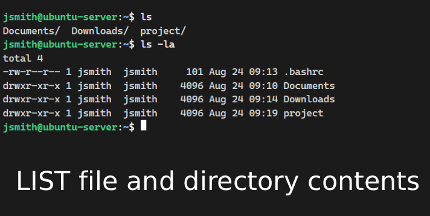
ls
ls -laCommand used to list files and directory contents within the current or specified path.
Try it in the 1.9 Linux lab — click ls in the command index (loads
ls -la into the prompt).1.91
Core CLI tools from ls through df — file ops, permissions, packages, networking, and process/disk utilities.

Command used to list files and directory contents within the current or specified path.
ls -la into the prompt).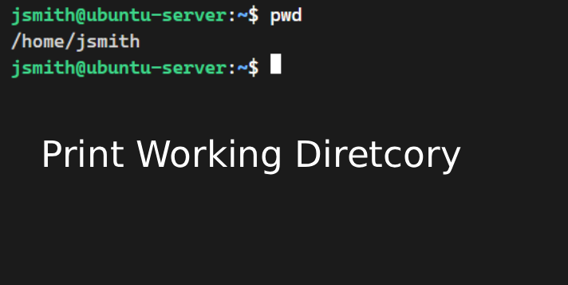
Print Working Directory command that outputs the full absolute path of the current directory.
pwd into the prompt).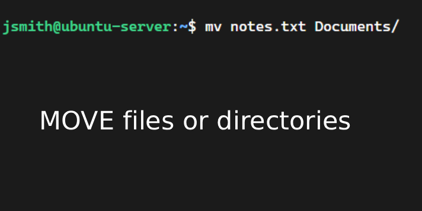
Command used to move files or directories, as well as rename them.
mv notes.txt Documents/ into the prompt).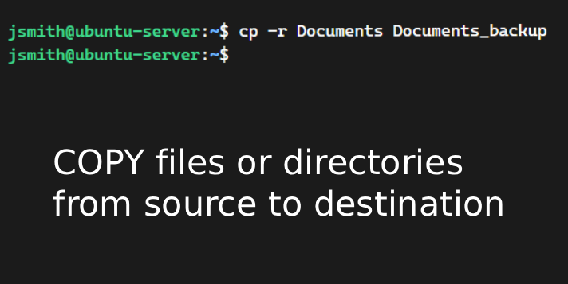
Command used to copy files and directories from a source location to a destination.
cp -r Documents Documents_backup into the prompt).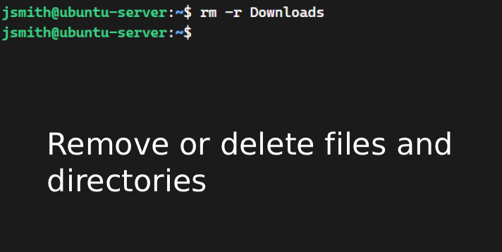
Command used to remove or delete files and directories permanently from the filesystem.
rm -r Downloads into the prompt).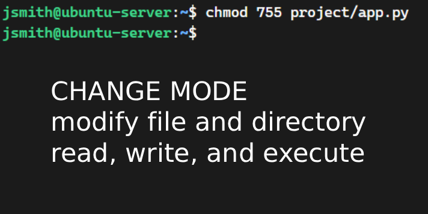
Change Mode command used to modify file and directory read, write, and execute permissions.
chmod 755 project/app.py into the prompt).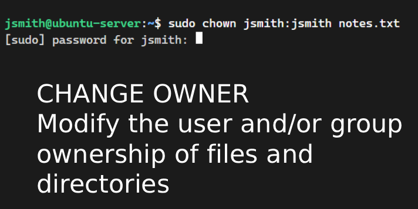
Change Owner command used to modify the user and/or group ownership of files and directories.
sudo chown jsmith:jsmith notes.txt into the prompt).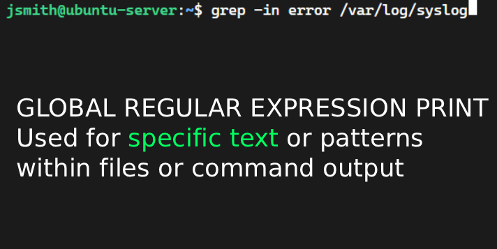
Global Regular Expression Print command used to search for specific text or patterns within files or command output.
grep -in error /var/log/syslog into the prompt).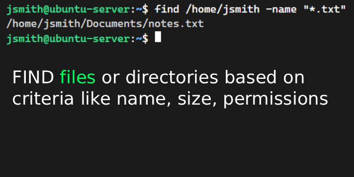
Search utility used to locate files and directories within a directory hierarchy based on criteria like name, size, or permissions.
find /home/jsmith -name "*.txt" into the prompt).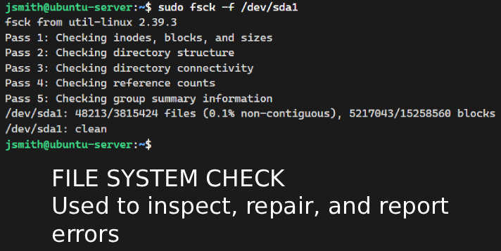
File System Check utility used to inspect, repair, and report errors on Linux filesystems.
sudo fsck -f /dev/sda1 into the prompt).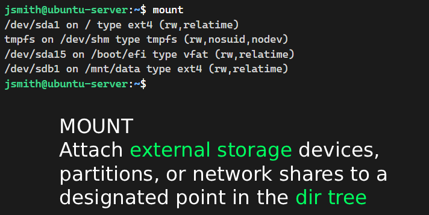
Command used to attach external storage devices, partitions, or network shares to a designated point in the directory tree.
mount into the prompt).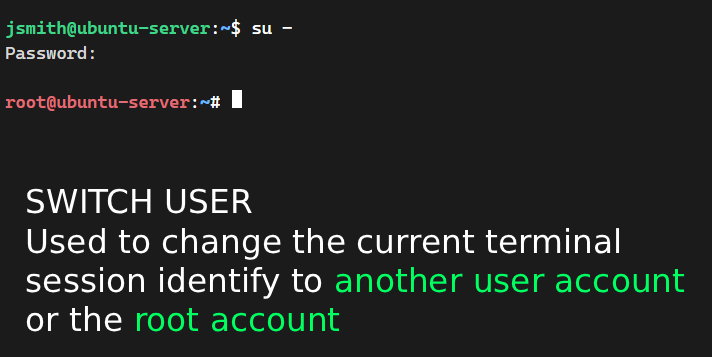
Switch User utility used to change the current terminal session identity to another user account or the root account.
su - into the prompt).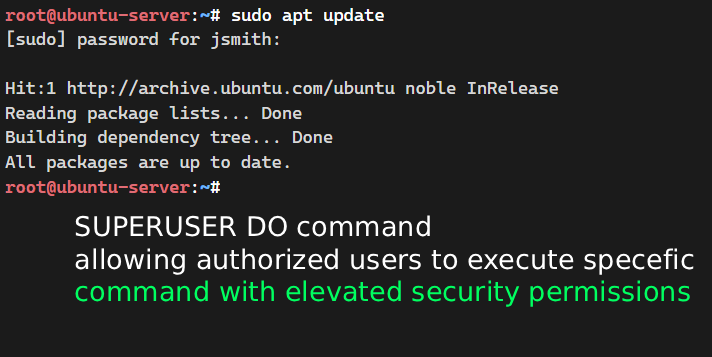
Superuser Do command allowing authorized users to execute specific commands with elevated security permissions.
sudo apt update into the prompt).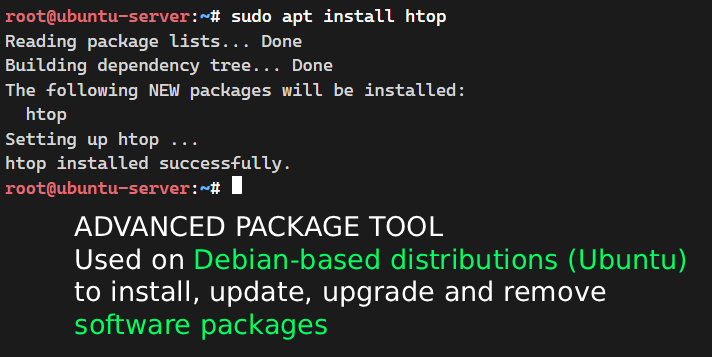
Advanced Package Tool used on Debian-based distributions (like Ubuntu) to install, update, upgrade, and remove software packages.
sudo apt install htop into the prompt).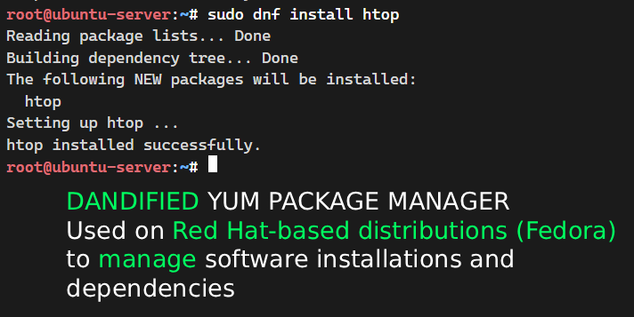
Dandified YUM package manager used on Red Hat-based distributions (like Fedora and RHEL) to manage software installations and dependencies.
sudo dnf install htop into the prompt).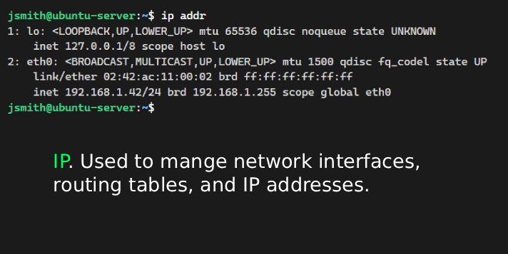
Modern network configuration utility used to manage network interfaces, routing tables, and IP addresses.
ip addr into the prompt).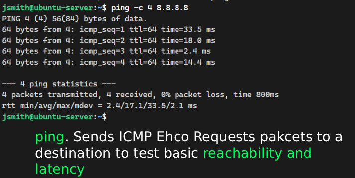
Network utility that sends ICMP Echo Request packets to a destination to test basic reachability and latency.
ping -c 4 8.8.8.8 into the prompt).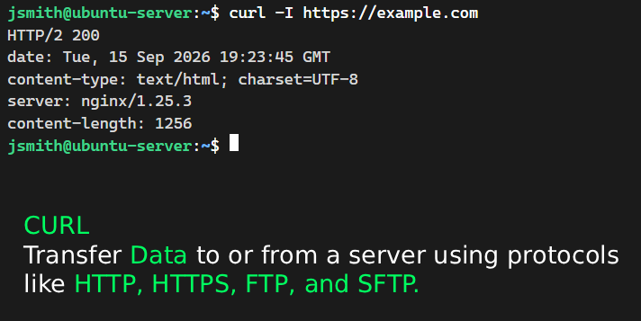
Command-line tool used to transfer data to or from a server using protocols like HTTP, HTTPS, FTP, and SFTP.
curl -I https://example.com into the prompt).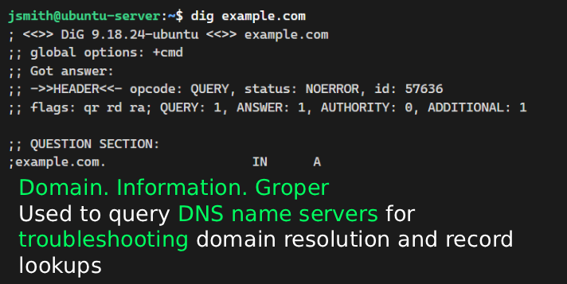
Domain Information Groper utility used to query DNS name servers for troubleshooting domain resolution and record lookups.
dig example.com into the prompt).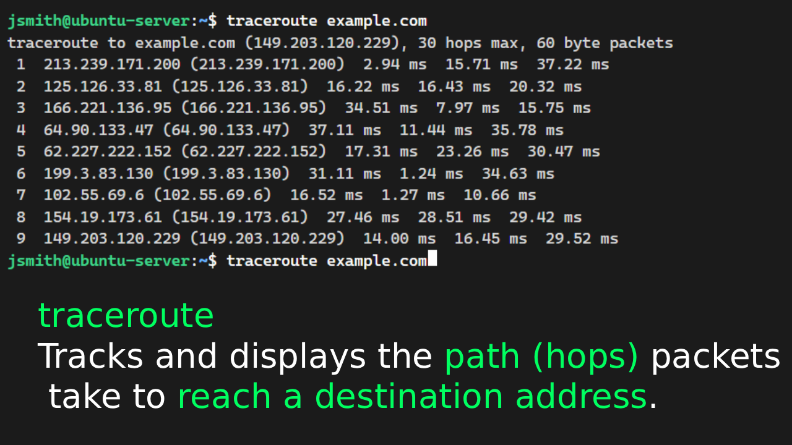
Network diagnostic tool that tracks and displays the path (hops) packets take to reach a destination address.
traceroute example.com into the prompt).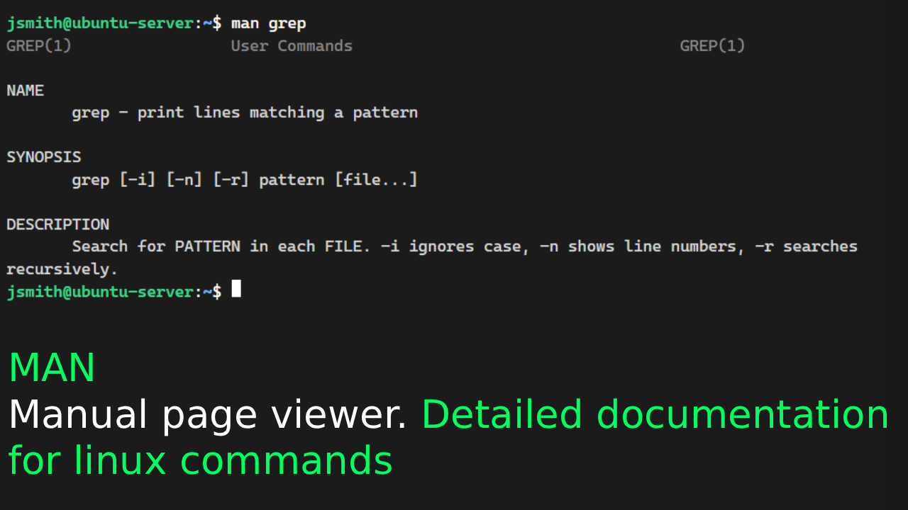
System manual page viewer providing detailed documentation, usage flags, and syntax examples for Linux commands.
man grep into the prompt).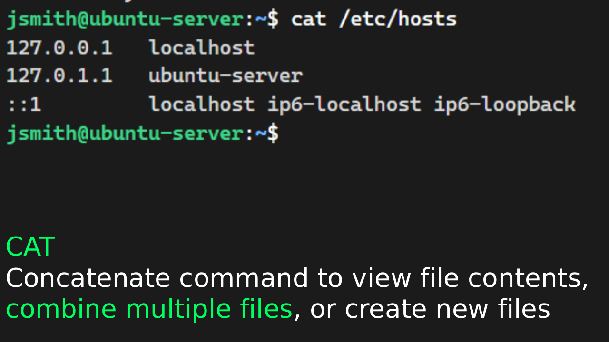
Concatenate command used to view file contents, combine multiple files, or create new files directly in the terminal.
cat /etc/hosts into the prompt).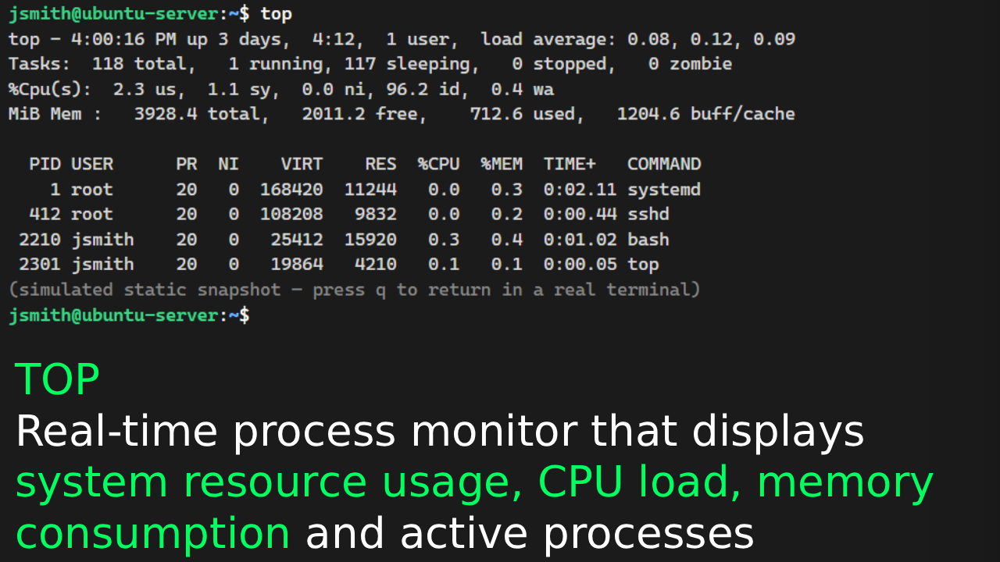
Real-time process monitor that displays system resource usage, CPU load, memory consumption, and active processes.
top into the prompt).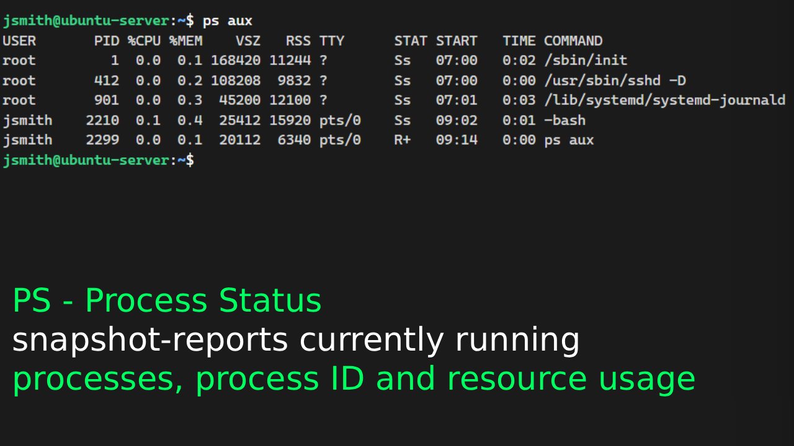
Process Status command that snapshot-reports currently running processes, their Process IDs (PIDs), and resource usage.
ps aux into the prompt).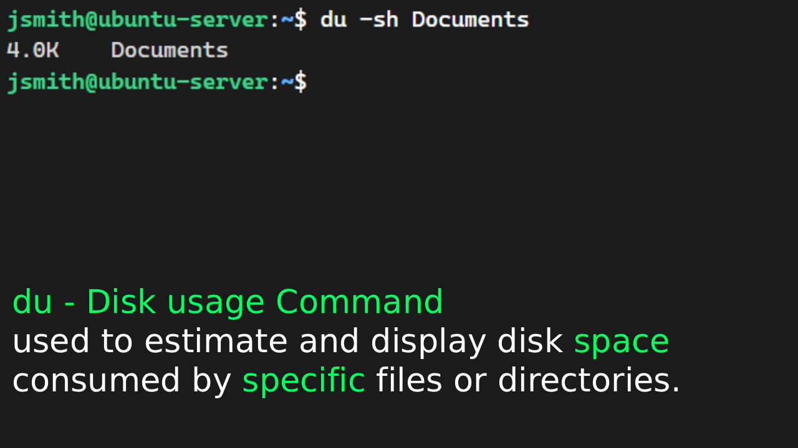
Disk Usage command used to estimate and display disk space consumed by specific files or directories.
du -sh Documents into the prompt).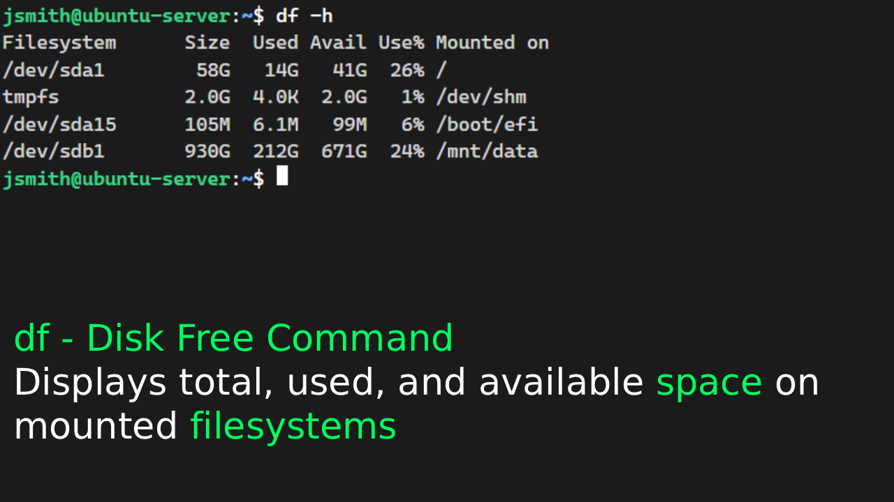
Disk Free command that displays total, used, and available space on mounted filesystems.
df -h into the prompt).